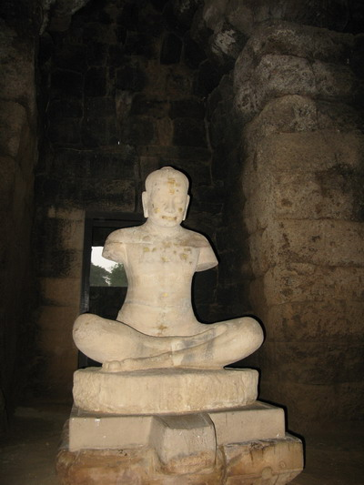

|  | ปรางค์พรหมทัตด้านหน้าของปรางค์ประธานทางทิศตะวันออกเฉียงใต้มีปรางค์อีกองค์หนึ่งตั้งตรงเป็นแนวเดียวกันกับปรางค์หินแดง ปรางค์องค์นี้เรียกกันว่า ปรางค์พรหมทัต สร้างด้วยศิลาแลง ฐานรูปสี่เหลี่ยมจัตุรัสย่อมุมกว้าง 14.50 เมตร สูงประมาณ 16 เมตร ใช้หิน ทรายสีขาวประกอบในบางส่วนที่ต้องการความแข็งแรงและสลักลวดลายประดับ เช่น เสากรอบ ประตูทับหลัง เสารับทับหลัง เป็นต้น มีประตูเข้าสู่องค์ปรางค์ก่อเป็นมุขยื่นออกไปทั้ง 4 ทิศ ภายในองค์ปรางค์ได้พบประติมากรรมสำคัญ คือประติมากรรมรูปบุคคลขนาดใหญ่นั่งขัดสมาธิสลักด้วยหินทรายซึ่งเชื่อกันว่าเป็นรูปพระเจ้าชัยวรมันที่ 7 ซึ่งชาวบ้านเรียกประติมากรรมรูปนี้ว่าท้าวพรหมทัตและเป็นที่มาของชื่อเรียกปรางค์องค์นี้ อีกรูปเป็นประติมากรรมสตรีนั่งคุกเข่าสลักด้วยหินทรายเช่นเดียวกัน ส่วนศีรษะและแขนขาดหายไปนานแล้ว เชื่อกันว่าอาจเป็นรูปพระนางชัยราชเทวีมเหสีของพระเจ้าชัยวรมันที่ 7 ชาวบ้านเรียกตามนิยายพื้นบ้านว่า นางอรพิมพ์ปัจจุบันตั้งแสดงอยู่ที่พิพิธภัณฑสถานแห่งชาติพระนครทั้งสองรูป (จรรยา มาณะวิท และระวิวรรณ บุญญศาสตร์พันธุ์, 2542: 54) |